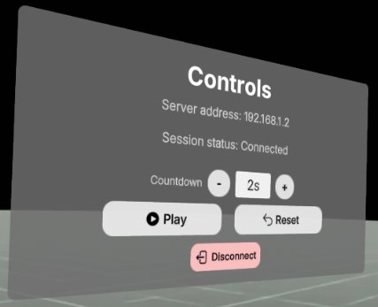
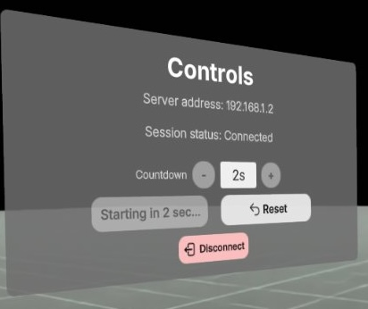
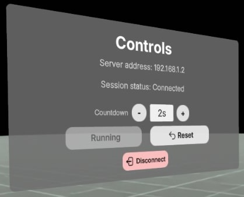

Teleoperating on XR Headsets
🔨 Build Client and Host Web Server
Once you have Isaac Lab and the CloudXR Runtime running, you can build and host the web server for the CloudXR.js client application.
Choose Option A (Docker) for a quick containerized setup, or Option B (Local) for development with hot reloading.
Option A: Docker (Recommended for Quick Start)
Prerequisites
- Docker installed and running
Build and Run
# Build the Docker image (for isaac example)
docker build -t cloudxr-isaac-sample --build-arg EXAMPLE_NAME=isaac .
# Run the container
docker run -d --name cloudxr-isaac-sample -p 8080:80 -p 8443:443 cloudxr-isaac-sample
Open http://localhost:8080 (HTTP) or https://localhost:8443 (HTTPS) in your browser.
Note: When using HTTPS, you'll need to accept the self-signed certificate warning in your browser.
To stop and remove the container:
docker stop cloudxr-isaac-sample && docker rm cloudxr-isaac-sample
Option B: Local Development
Prerequisites
- Node.js (v20.19.0 or later) and npm
- Download and installation instructions: https://nodejs.org/en/download
- Verify installation:
node --versionandnpm --version
Build and Run
- Navigate to Example Directory
cd isaac
- Install Dependencies
# For this early access release, install the SDK from the provided tarball
# This step will not be required when the SDK is publicly accessible
npm install /path/to/nvidia-cloudxr-6.0.1-beta.tgz
# Install remaining dependencies
npm install
- Choose Hosting Mode
Select the appropriate server mode based on your deployment requirements:
For local development (HTTP):
npm run dev-server
- Local:
http://localhost:8080/ - Network:
http://<server-ip>:8080/ - Supports both
ws://(direct) andwss://(proxied) runtime connections - Note: HTTP mode is not supported on Pico 4 Ultra
For local development or production (HTTPS):
npm run dev-server:https
- Local:
https://localhost:8080/ - Network:
https://<server-ip>:8080/ - Generates self-signed certificates for development, use custom certificates for production
- See Client Setup - Trust SSL Certificates for trusting certs in your device
Note: When using HTTPS mode, you must configure a WebSocket proxy. Browsers enforce mixed content policies that block insecure
ws://connections from HTTPS pages. See Networking Setup - WebSocket Proxy for proxy configuration example.
🖥️ Test from the Same Computer (Optional but Recommended)
For local development, our web app automatically loads IWER (Immersive Web Emulator Runtime) to emulate an XR headset when no physical XR device is detected.
-
Make sure you have:
- Chromium browser or Google Chrome
- IWER will automatically load when you start the application
- If you have installed the Immersive Web Emulator Chrome extension, please disable it as it will conflict with IWER
-
Ensure your CloudXR Runtime and OpenXR application are running
-
Navigate to the web application based on your chosen hosting mode:
- HTTP mode:
http://localhost:8080/ - HTTPS mode:
https://localhost:8080/- Accept the cert (see Client Setup - Trust Web Cert)
- HTTP mode:
-
Make sure you see the following messaging, indicating IWER is loaded

-
(HTTPS mode only) Fill in the
Proxy URLif you have any, or click to accept the cert
-
Click
CONNECT
If successful, you should see the green CONNECT button change to CONNECT (STREAMING), and the streamed content from your server application will appear in your browser!
You could use the develop UI from IWER to emulate device position and input, for example:

🥽 Test from XR Headset
Once you've validated the setup works locally, you can test with an actual XR headset.
Supported Headsets:
- Meta Quest 3 (OS version 79 or later) - Supports both HTTP and HTTPS modes
- Pico 4 Ultra (Pico OS 15.4.4U or later) - HTTPS mode required, HTTP mode not supported
Prerequisites
-
Configure Headset: Follow the appropriate browser configuration guide:
- Meta Quest 3: Meta Quest 3 Configuration
- Enable WebXR for HTTP origins (if using
npm run dev-server) - Trust SSL certificates (if using
npm run dev-server:https)
- Enable WebXR for HTTP origins (if using
- Pico 4 Ultra: Pico 4 Ultra Configuration
- Trust SSL certificates (HTTPS mode
npm run dev-server:httpsrequired)
- Trust SSL certificates (HTTPS mode
- Meta Quest 3: Meta Quest 3 Configuration
-
Configure Network: Ensure required ports are open:
- Web server: Port 8080 (TCP) or your configured port
- CloudXR Runtime: Port 49100 (TCP) and 47998 (UDP)
- WebSocket proxy (if using HTTPS): Port 48322 (TCP) or your configured port
- See Networking Setup - Firewall Configuration for details
Connection Configuration
-
Navigate to the web application on your headset browser:
- HTTP mode (not supported on Pico 4 Ultra):
http://<server-ip>:8080/ - HTTPS mode:
https://<server-ip>:8080/
- HTTP mode (not supported on Pico 4 Ultra):
-
Configure server connection in the web application:
- Enter your server IP address
- Enter the port:
- Port 49100 - Direct connection (HTTP mode only)
- Port 48322 - Proxied connection (required for HTTPS mode, optional for HTTP mode)
-
Grant permissions:
- Click
CONNECT - Allow WebXR permissions when prompted
- Click
Application-Specific Configuration
Before connecting, verify your Isaac Lab server is ready:
- CloudXR Runtime is running
- Isaac Lab is running with the desired task
- Isaac Lab is using
System OpenXR Runtime - Isaac Lab is in AR mode (
Start ARbutton pressed)
Configure the following application settings in the client web page's Debug Settings section:
| Setting | Recommended Value | Notes |
|---|---|---|
| Preferred Reference Space | local |
Required for proper tracking |
| X Offset (cm) | 0 |
Horizontal positioning |
| Y Offset (cm) | -155 |
Vertical positioning |
| Z Offset (cm) | 10 |
Depth positioning |
| Teleoperation Countdown Duration (s) | User preference | Time before recording starts (optional) |
Note: Offset values are task-dependent. Adjust based on robot height and workspace as needed.
How to use
Once streaming starts, you will see a window to your right with teleoperation controls:

Countdown- you can use the-(minus) and+(plus) buttons to adjust the countdown timer for starting teleoperation.Play- this will start the countdown. Once countdown is finished, the teleoperation session recording starts.Reset- this will both stop and reset the teleoperation session. After pressing this you can pressPlayto continue teleoperation (following the countdown timer).Disconnect- this will exit the whole streaming and immersive session
To start teleoperating, click Play. It will start counting down in seconds as configured.

During the countdown, position your hands at the right place and wait for recording to start.
Whenever you complete a task, it will automatically start a new recording and generate the recording file.

To stop teleoperating and reset the position of robot arm, click the Reset button.
Next
Troubleshooting Isaac Lab Teleoperation using CloudXR.js